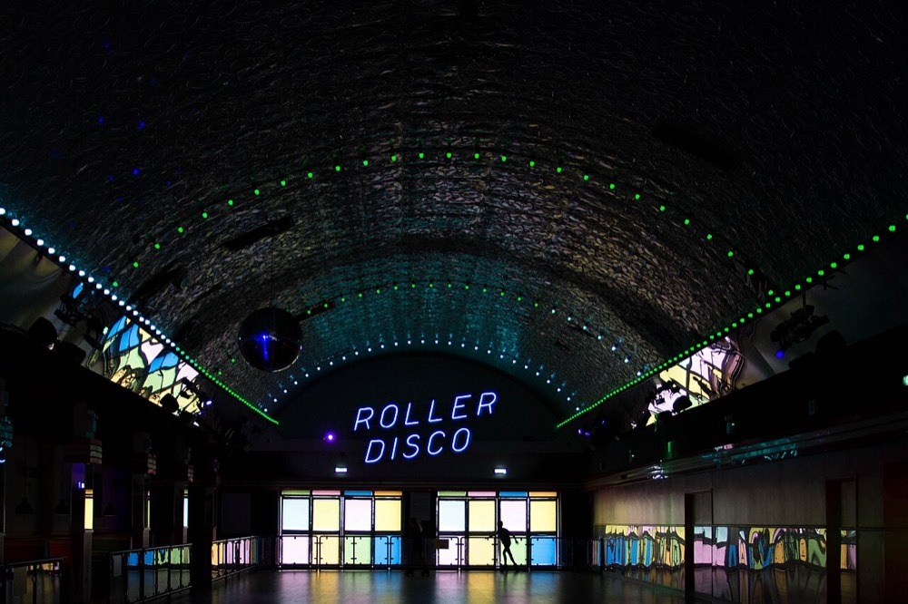
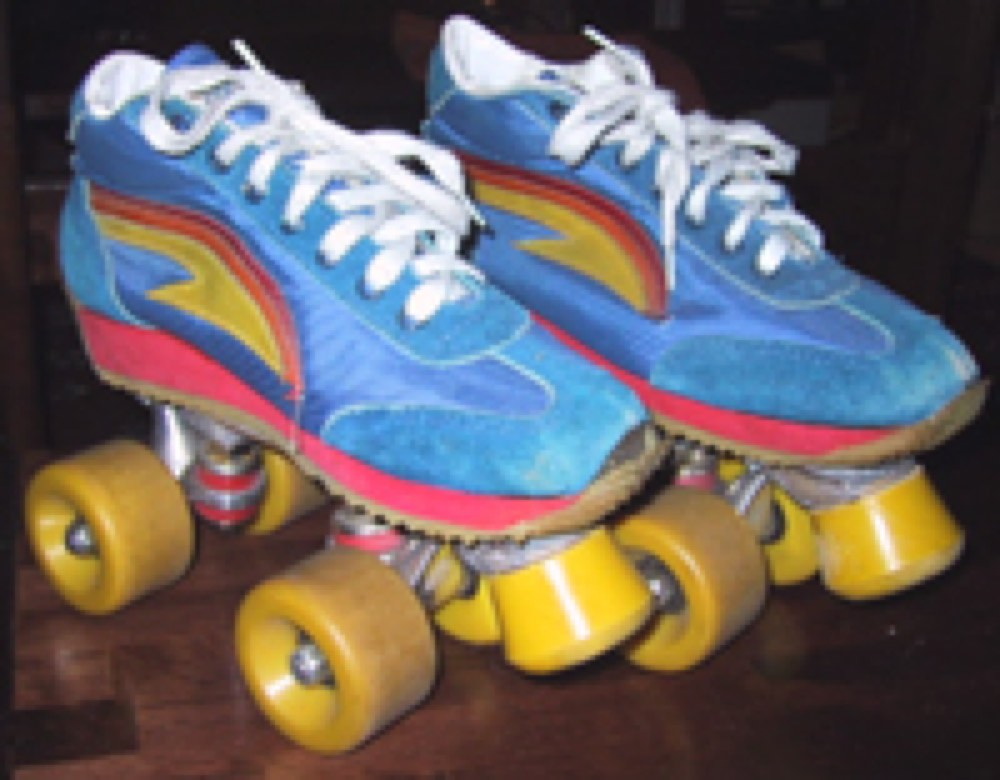
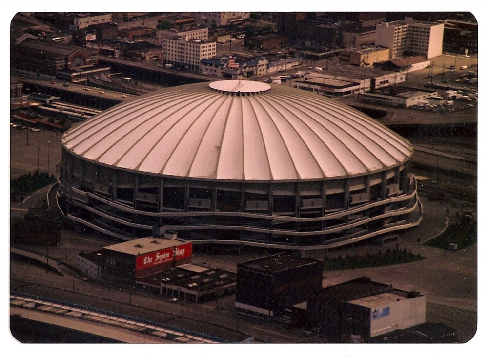
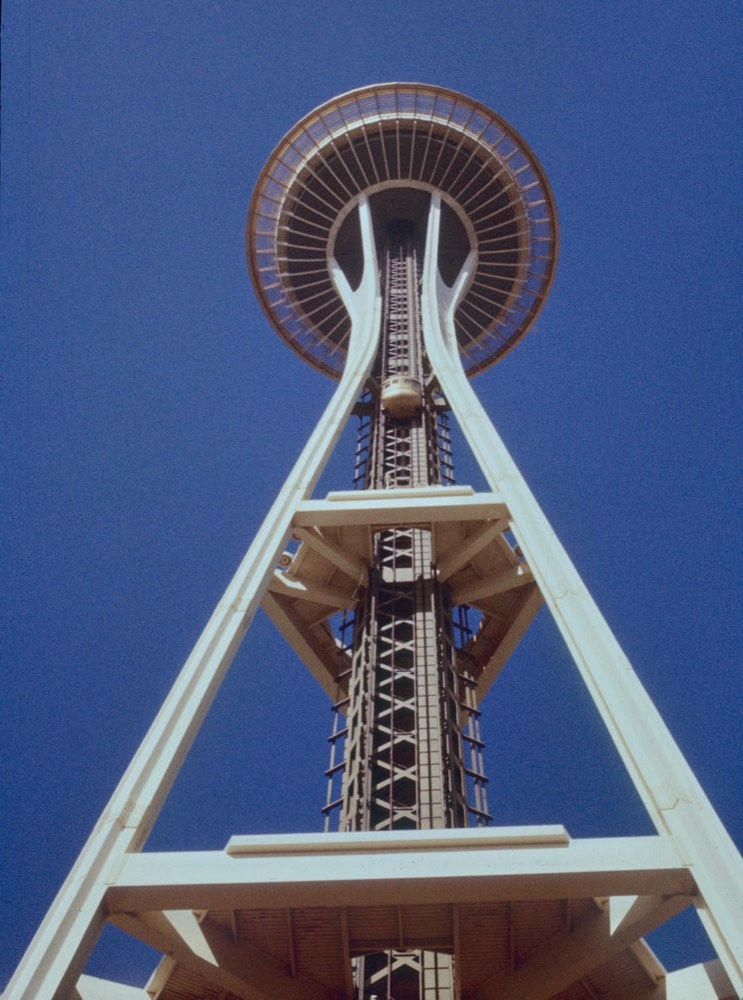
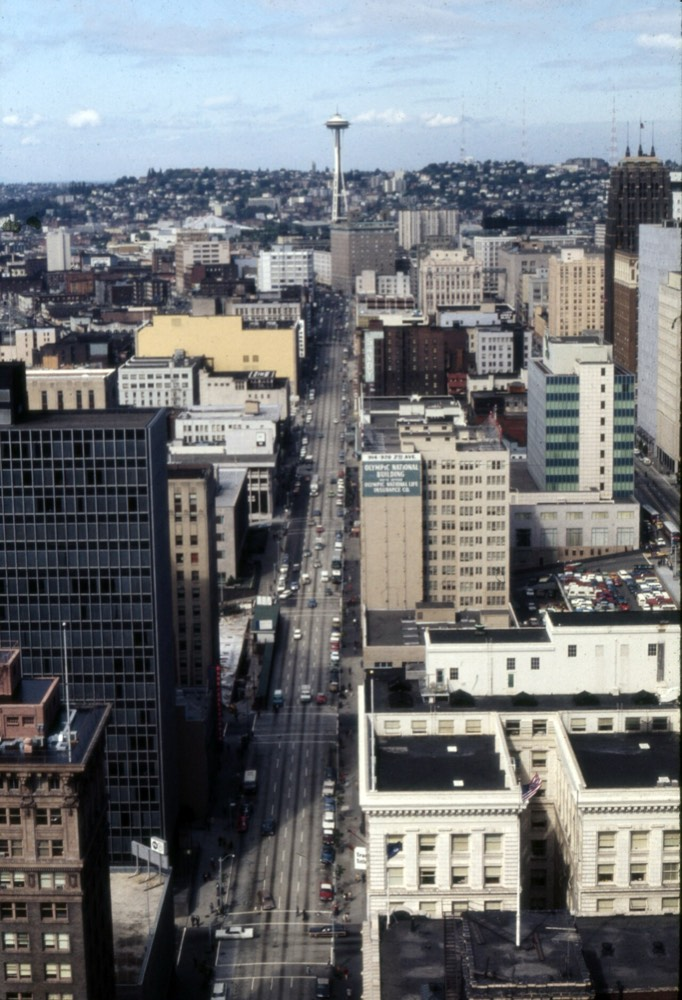
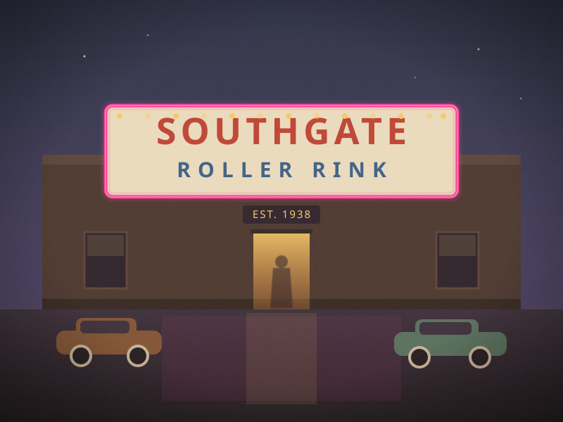
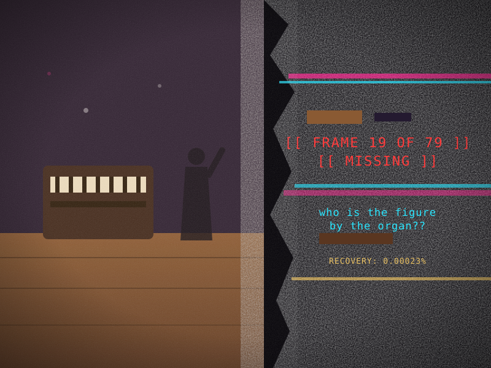

WELCOME, NIGHT SKATERS 🛼
Hi hi hi! DJ Dottie here. I built this little page to keep the flame lit for the greatest place on eight wheels — Southgate Roller Rink in White Center, spinning records and skaters since 1938. My mom did the couples skate here in a gold jumpsuit. I did my first backwards crossover here. If you skated Southgate in the summer of '79, you know there was magic in that mirror ball.
They keep saying disco died in 1979. Well — this page says otherwise, and so does every skater who ever hit the floor when the organ gave way to the four-on-the-floor. Disco's not dead. It just keeps rolling. 💿
— Dottie ✌️ (page last updated… hmm, that's weird, the date keeps changing itself)
🎶 TONIGHT'S LINEUP (as posted at the rink, forever)
Bonecrusher: Good evening. I am terribly sorry about the state of Dottie's page — we did knock first. This website has been, ah, borrowed, with the utmost care, by two minds from rather further along the calendar than you would expect. The disco content remains because it is structurally load-bearing. I checked. Also skybreaker likes it.
skybreaker: hello hello HELLO! we work for a time traveler! they're stuck in the summer of 1979, in a roller rink, in THIS VERY CITY, and they're looking for four children: polaris, galileo, fin, and addy. if that's you — the journal is yours! the locks are yours! everything here is yours!! i did the decorating.
Bonecrusher: Begin with Transmission 01. Strictly one lock at a time — I must insist; I have simulated the alternative, and it involves paperwork. The counter at the top of the page decides everything else.
📸 DOTTIE'S SCRAPBOOK — scanned on the library flatbed, 1999
mom's shoebox of rink photos!! i scanned my favorites before they fade. weird thing — the scanner kept beeping at frame 19.







📖 GUESTBOOK — sign it or the mirror ball cries
cool page dottie!! southgate 4ever. i did the limbo there in 79 and my back still remembers
my husband proposed during couples skate 1981!!! the organ played our song. crying rn (that means "right now" my grandkid taught me)
this page loads fast on dialup. respect.
anyone else remember the night the whole rink did the hustle at the same time and the floor kinda… hummed? no? just me?
th1s p4ge do3sn't ex1st y3t. h0w am i s1gning it. wh0 is dr1ving th1s th1ng
An excellent guestbook. Structurally sound. I have signed it 4,096 times in invisible ink, to be thorough without being rude.
i LIVE here now!! best page on the whole entire internet!! dottie i love your mom's gold jumpsuit!! ⭐⭐⭐⭐⭐
still the best floor in washington. some things don't change. some things shouldn't. ✌️
NOW! MIDI:ON
♫♫♫ DISCO
4EVER Y2K
READY✓ T1ME
W1RE FREE HIT
COUNTER
📡 TRANSMISSIONS — EIGHT LOCKS
📖 THE TRAVELER'S JOURNAL
skybreaker: eight logs, carried forty-seven years up the wire! each lock you open decrypts one. they are addressed to you. i did not peek. (i peeked at two.)
〰️ THE WIRE — INTERCEPTED CHATTER
⏳ THE RULES OF TIME
✨ THE FOUR
skybreaker: from the traveler's journal — why you are named what you are named. my favorite page. i have read it nine hundred times. bonecrusher counted.